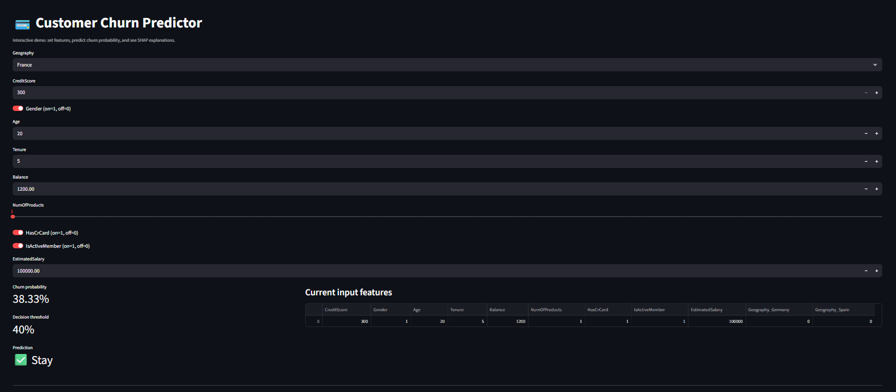

| Project | Predicting Customer Churn in the Banking Sector |
|---|---|
| Tools Used | Python, Pandas, Scikit-learn, XGBoost, SHAP, Matplotlib, Seaborn |
| Description | Built a machine learning system to predict customer churn in the banking sector. Focused on both performance and interpretability by applying explainable AI techniques (SHAP) to understand the key drivers behind customer attrition and translate model outputs into actionable business insights. |
|  |
| Project | Machine Learning Classification on MAGIC Gamma Telescope Dataset |
|---|---|
| Tools Used | Python, Scikit-learn, KNN, Pandas, NumPy, Matplotlib, Seaborn |
| Description | Implemented a supervised machine learning classification pipeline using the MAGIC Gamma Telescope dataset. Applied data preprocessing, feature scaling, and K-Nearest Neighbors (KNN) modeling, followed by performance evaluation and visualization to assess model accuracy and behavior. |

|